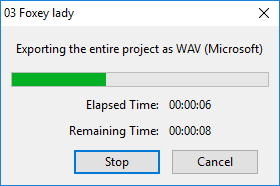

Export Audio
From Audacity Development Manual
The Export Audio dialog (for export of a single audio file from the whole project) is accessed from . When you use to export a single audio file from a selection, the Export Selected Audio dialog appears. Both these dialogs are identical and let you specify folder location, file name, format and encoding options for your exported file.
You can use to export multiple audio files (based on labels or multiple audio tracks) in one process.
Export Audio or Export Selected Audio dialog
In summary, there are five steps to follow when exporting.
- Choose the folder to export to in Save in: then type the file name you want.
- Select the type of audio file to export to.
- Set the Format Options (if those are available for your selected format) if you want to change the size, quality or other encoding choices for that selected file format.
- Press .
- The Metadata Editor dialog will then appear (unless you have disabled it for the export step in the Import/Export Preferences). Edit Metadata lets you enter embedded information in the file such as artist, year or genre. Either leave the metadata blank or complete the fields you require, then press (not "Save...").
File name
Type the required file name. The correct file extension - preceded by a period (dot) - will be added automatically to the end of the file name, according to the format selected in the "Save as type" list (see below). For example, typing "08 Voodoo Chile" (without quotes) will produce a file "08 Voodoo Chile.wav". For M4A and WMA formats (for which the optional FFmpeg library is required), you can add alternative extensions as specified in "FFmpeg formats" below.Any other extensions can be added after a file name as required, but Audacity will display a warning that this is not the normal extension for this file type, and that some applications might not play files with non-standard extensions.
Save as type
Clicking in the input box opens a dropdown menu enabling you to chose the file format you wish to export to:
Hover over each row in "Save as type:" in the image to learn more. Skip the image
- Export Formats supported by Audacity for more details on the various format types that Audacity supports for export
- Exporting to an External Program for details of how to export audio for use in an external program
- Custom FFmpeg Export Options for details on how you can export a specific codec in a specific format container
Format Options
Notice with the image at the top of this page, for the default export to WAV format there are no export options. However some formats do offer options for making settings like quality or encoding. As an example, here is the MP3 format export dialog showing the available Format Options:
See MP3 Export Options for details of the MP3 export setting, or AAC Export Options for AAC export settings.
Custom FFmpeg export options
In the Export dialog when you select Custom FFmpeg Export in the Save as type dropdown, then the Options pane will contain the button. Clicking on the button will bring up the custom options dialog. See Custom FFmpeg Export Options for more details.
| Note that when using custom FFmpeg export it is necessary to supply the full file name and the extension in the File name: field as Audacity does not automatically add the extension in this case. Otherwise you will need to manually add the extension to the file name after export. |
Cancelling the export process
You may abort the export process without writing the file by pressing in the Export Audio / Export Selected Audio dialog, or in the Advanced Mixing Options or Metadata Editor dialogs (if those dialogs appear). If you Cancel in any dialog, any changes you made to the "Save in:" directory or file type will not be preserved for next time you export.
Export progress dialog
Once you have clicked the button in the export dialog and in Edit Metadata, Audacity will display a dialog displaying progress of writing the exported file:
- 
The colored bar is a visual indicator of how much of the file has been written. The Elapsed Time and Remaining Time are estimates and may change as the export progresses.
Clicking either the or button will halt the export where it is now, leaving the partially exported file in place.